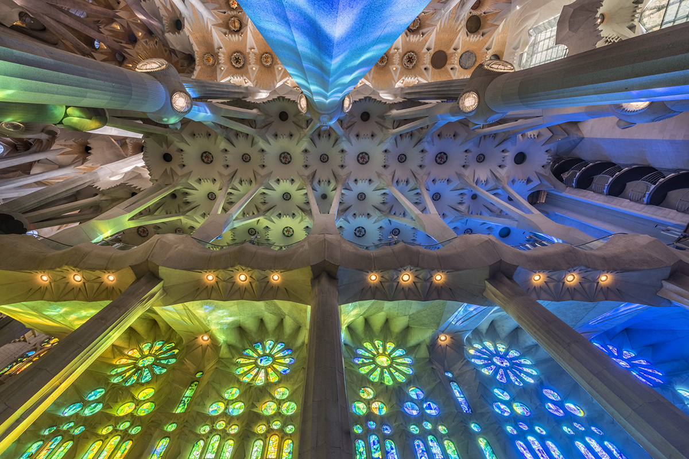
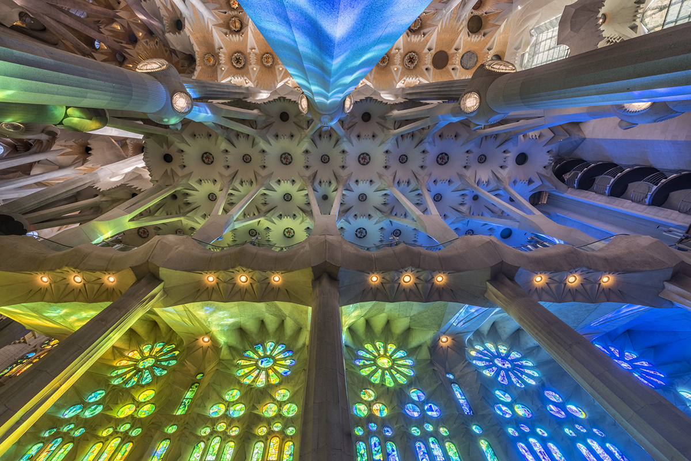
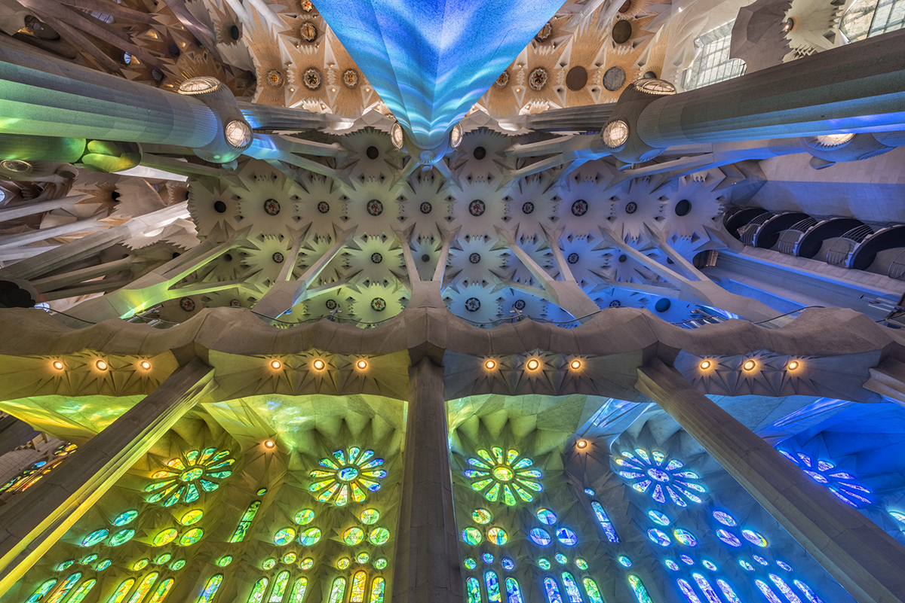
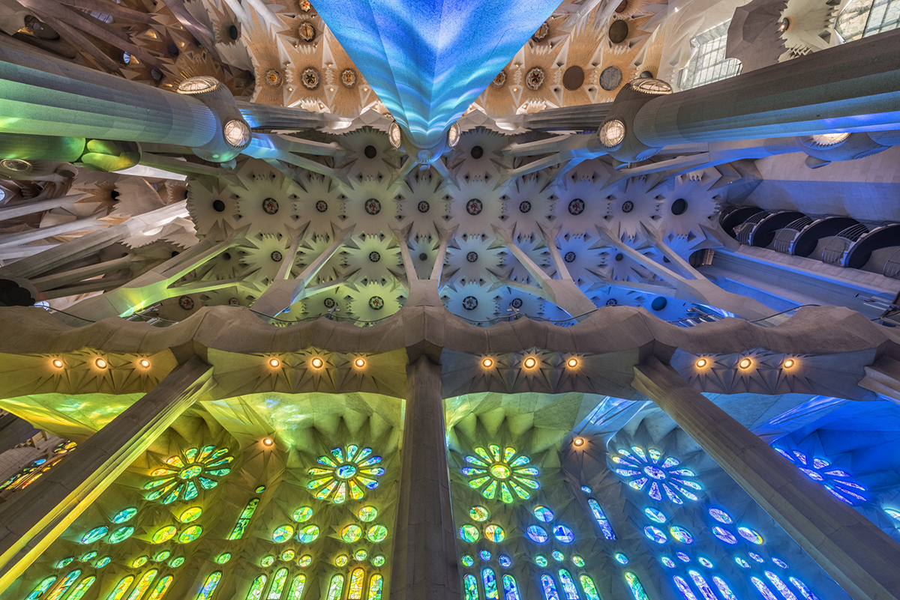

The Sagrada Familia is such a unique work of art. Located in the Eixample district of Barcelona, Catalonia, Spain, it is a building you can not miss. The Sagrada Familia features a mix of Catalan Modernism, Spanish Late Gothic, and Art Nouveau. Antoni Gaudi was the architect of this building and his inspiration was nature and God.
When you step into The Sagrada Familia, it feels so different than walking into a regular church. You first notice the stained glass windows and the sunlight coming through it. This creates a beautiful streak of color all throughout it. Hues of blue, red, green, light up the church. There's columns all around and if you looke up, there's a distinct feature at the end of it. The columns break into branches and it reminds you of trees. Antoni Gaudi loved nature and would use it in his work and the way he showcased this in the church is insane. Besides that, you can go up the 8 towers this building has and can see Barcelona from there.
The Sagrada Familia is still under construction. It's been under construction since the passing of Antoni Gaudi, that's almost a whole century. If you ever find yourself in Barcelona, add this building to your list and take in the sight for yourself. You won't regret it!